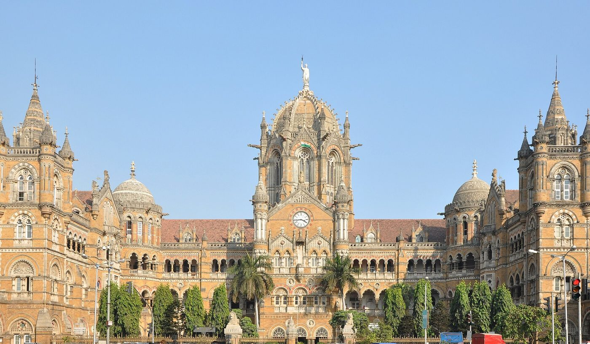
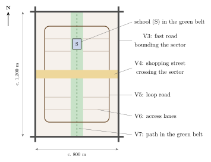
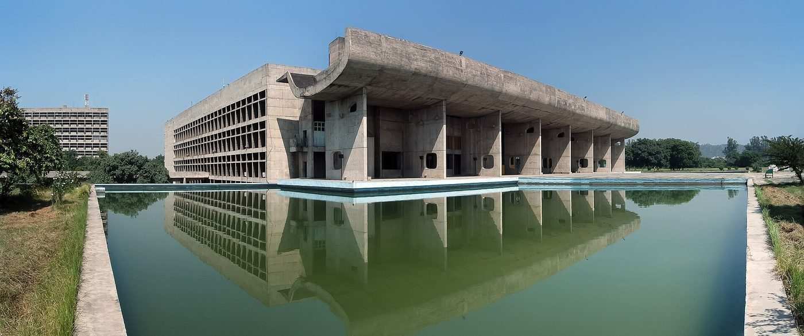

Chapter 7: Palaces, Colonial and Modern Architecture¶
Temples, stūpas, mosques and tombs were built to last, and most of the architecture that survives from before the 15th century is religious. Royal residences were rebuilt by each generation, and the houses of the great were made of timber and brick. From the 15th century onward, however, palaces survive in large numbers, and in the colonial and modern periods the buildings of government, commerce, education and housing became the main field of architectural invention. This chapter follows that secular architecture from the Rajput and Deccani palaces to the princely states, the colonial cities and the architects of independent India. The planning of the colonial cities and of the new capitals is taken up again in Chapter 8, which refers back to the accounts of New Delhi and Chandigarh given here; fortification as such is treated in Volume 20, Yuddha.
7.1 Forts and Palaces¶
Fortified hilltops and walled palaces are among the most conspicuous monuments of India. Hill forts such as Gwalior, Chittorgarh, Kumbhalgarh, Daulatabad and Golconda were occupied and rebuilt over centuries (Chapter 8). At Gwalior, the Mān Mandir palace of Rājā Mān Siṅgh Tomar (1486–1516) is decorated with bands of glazed tiles showing ducks, elephants and plantain trees, and its arrangement of rooms round small courts influenced later palaces. The Rajput rulers of Rajasthan built palaces such as those of Amber (from the late 16th century), Udaipur, Jodhpur, Bikaner and Jaisalmer, combining Mughal planning, courts, gardens and pavilions with the balconies, screens and brackets of local tradition (Tillotson 1987). In the South, the Kerala kings built the timber palace of Padmanābhapuram (largely 16th–18th century), with steep tiled roofs and carved wooden interiors, while the Nāyakas of Madurai built the Tirumala Nāyaka palace (17th century), with arched courts and halls that combine Indo-Islamic and southern elements. The Mughal forts of Agra, Lahore and Delhi contain the most refined imperial palaces, with marble pavilions, gardens and running water (Chapter 6). Six hill forts of Rajasthan, including Chittorgarh, Kumbhalgarh, Amber and Jaisalmer, are together a UNESCO World Heritage Site.
7.1.1 Palaces before the 15th Century¶
Few royal residences survive from before the 15th century. They were built largely of timber and brick, and are known mainly from literature, from the prescriptions of the vāstu texts for royal houses (Chapter 10) and from excavated foundations, such as the platforms and enclosures of the royal centre at Vijayanagara (Chapter 8). The Samarāṅgaṇasūtradhāra and the Mānasollāsa of the Cālukya king Someśvara III (1131) describe palaces with halls of audience, pleasure pavilions, water-houses and gardens, but no palace of their time stands intact, and it is not possible to say how closely real palaces followed the textual descriptions.
7.1.2 The Rajput Palace¶
Giles Tillotson has traced the development of the Rajput palace from the 15th to the 18th century. The early palaces, such as Rāṇā Kumbhā’s palace at Chittorgarh and the Mān Mandir at Gwalior, are compact blocks of rooms grouped around small courts, with blank lower walls and open, pillared and screened upper storeys, enlivened by chhatrīs and balconies. Later palaces grew by accretion: each ruler added his own courts and apartments, so that the City Palace at Udaipur, begun in the mid-16th century on a ridge above Lake Pichola, and the palace within Mehrangarh fort at Jodhpur are long chains of buildings rather than single designs. Contact with the Mughal court, where Rajput rulers served as nobles, brought symmetrical courts, formal gardens, audience halls of the Mughal type and the baṅglā roof (Chapter 6). But the Rajput palace kept its own character: vertical rather than horizontal, built up on rock rather than spread out on the plain, and organised around the division between the men’s apartments (mardānā) and the women’s (zanānā), whose screened windows and balconies (jharokhā, jālī) allowed the women of the household to watch the life of the court and the town without being seen (Tillotson 1987).
The palaces of the Bundela kings at Orchhā and Datiā, built in the early 17th century by Bīr Singh Deo, the ally of Jahāngīr, show the most rigorous geometry of the type: the palace at Datiā is a square block of several storeys around a central court in which a tall central tower rises, a plan that has been compared with Mughal ninefold designs. Amber, the Kachhwāhā capital, shows the Mughal phase at its fullest, with a public audience hall of double columns, a painted and inlaid gateway (Gaṇeś Pol) and private apartments decorated with mirror-work round a formal garden. In the 18th century palaces moved down to the plains and opened out: Jai Singh II’s City Palace at Jaipur (Chapter 8) and the palaces of the Jāṭ rulers at Dīg, whose pavilions stand among tanks, channels and fountains, are examples.
7.1.3 Palaces of the South, the Deccan and the North-east¶
In the South, palaces were built of timber and brick on stone bases long after northern palaces were built of stone. Padmanābhapuram is not a single building but a complex of courtyard buildings of different dates, with polished floors, carved ceilings and wall paintings; at Thanjavur, the palace of the Nāyakas and of their Maratha successors has tall towers and houses the Sarasvatī Mahal library, with its great collection of manuscripts. The Maratha rulers and their ministers built mansion-palaces (wāḍā) of brick and timber around courts, of which the Shaniwār Wāḍā at Pune is the best known (Chapter 10). In Assam, the Ahom kings built multi-storeyed palaces of brick and lime near Sivasagar, the Kāreṅg Ghar at Garhgaon and the Talātal Ghar at Rangpur, and, also at Rangpur, the Raṅg Ghar, a two-storeyed pavilion with a roof shaped like an upturned boat, from which the court watched games and contests at the spring festival.
7.1.4 The Last Palaces¶
The princely states of the colonial period continued to build palaces on a lavish scale, now designed by British or European-trained architects: Swinton Jacob’s Lālgaṛh palace at Bikaner and Henry Irwin’s palace at Mysore (Section 7.2) in the Indo-Saracenic manner, and, last of all, the Umaid Bhawan at Jodhpur (completed 1943), designed by the English architect H. V. Lanchester, which combines a classical plan and a great central dome with the stylised geometry of Art Deco. After 1947 many palaces became museums, hotels or offices, and their conservation, like that of the havelīs of their nobles and merchants, is now one of the main concerns of heritage work in Rajasthan.
7.2 European and Colonial Architecture¶
7.2.1 European Churches and Towns¶
The first European colonial architecture in India was Portuguese. At Old Goa, the churches and convents of the 16th and 17th centuries, among them the Sé Cathedral and the Basilica of Bom Jesus (completed 1605), which contains the tomb of St Francis Xavier, built of laterite faced with lime plaster in Renaissance and Baroque styles, form a UNESCO World Heritage Site. Danish, Dutch and French settlements at Tranquebar, Cochin, Chinsurah and Pondicherry also left churches, forts and houses, and Syrian Christian churches in Kerala combine a European façade with a Kerala timber roof. The Goan temples and houses that grew up under Portuguese rule are described in Chapters 5 and 10.
7.2.2 Engineers and Public Works¶
The British East India Company and, after 1858, the Crown built cantonments, churches, government offices, courts, universities, railway stations and bungalows across India. The earliest were in European classical styles: the Government House at Calcutta (1803) and the churches and public buildings of the presidency towns. Most of this building was the work not of architects but of military and civil engineers. Public Works Departments, organised in the provinces from the 1850s, built barracks, courts, offices, jails, bridges and canals to standard designs, and the Thomason College of Civil Engineering at Roorkee (1847) trained engineers, British and Indian, for the work. The materials were often new, cast iron and later steel, standard fired bricks and, from the early 20th century, reinforced concrete; but much of the craft of building remained in the hands of Indian contractors and master builders (mistrī), who adapted the new types and materials to local practice.
7.2.3 Gothic and Indo-Saracenic¶
From the mid-19th century the Gothic Revival dominated in Bombay, where the Victoria Terminus (1878–1888) by F. W. Stevens, now Chhatrapati Shivaji Maharaj Terminus (Figure 7.1), was inscribed by UNESCO in 2004 under the name Chhatrapati Shivaji Terminus; the city’s ensemble of Victorian Gothic and Art Deco buildings is a World Heritage Site as well. In the later 19th century architects such as Robert Fellowes Chisholm in Madras, Charles Mant and Samuel Swinton Jacob developed the “Indo-Saracenic” style, which applied domes, arches, chhatrīs and brackets drawn from Mughal, Rajput and Deccani buildings to modern structures such as the Madras High Court, Mayo College at Ajmer and the palaces of princely states. Thomas Metcalf has shown how this style expressed the British claim to be the heirs of India’s past rulers (Metcalf 1989).

.jpg){kind=link}
The style had a range and a theory of its own. Swinton Jacob, the engineer of Jaipur State, published from 1890 the Jeypore Portfolio of Architectural Details, volumes of measured drawings of Indian mouldings, brackets, arches, screens and pillars intended as a pattern book for designers, and employed traditional craftsmen on his own buildings. Henry Irwin was responsible for the Madras High Court (1892) and the rebuilt palace of the Wodeyars at Mysore (1897–1912), with its domes, arcades and carved and painted halls; William Emerson’s Victoria Memorial at Calcutta (1906–1921), a classical building in white Makrana marble with a few Mughal details, stands at the other end of the spectrum. Metcalf points out that the style sorted Indian forms into “Hindu” and “Saracenic” in the same way as the colonial census sorted Indian people, and that it treated the living crafts as survivals of a decaying tradition to be rescued by British patronage, an idea promoted by officials such as John Lockwood Kipling at the Mayo School of Art in Lahore (Metcalf 1989). Giles Tillotson has traced the parallel history of Indian builders who continued to work in their own traditions for princely and merchant patrons, and the long argument over whether a modern Indian architecture should revive them (Tillotson 1989). The same argument ran through painting, where E. B. Havell and Abanindranath Tagore sought an “Indian” style against the academic art of the government schools (Chapter 14) (Mitter 1994).
7.2.4 New Delhi¶
The decision to move the capital from Calcutta to Delhi was announced at the Delhi Durbar of December 1911, and the new imperial capital of New Delhi (1911–1931) was planned by Edwin Lutyens and Herbert Baker. The plan adopted after much argument placed the government buildings on Raisina Hill, south-west of Shāhjahānābād, and laid out from them a broad ceremonial avenue, Kingsway (later Rajpath, now Kartavya Path), running east towards the Purānā Qilʿa, with the All-India War Memorial arch (India Gate, completed 1931) on its axis. A network of avenues, meeting at roundabouts in a pattern of triangles and hexagons, linked the government centre with the railway station, the commercial centre at Connaught Place and the older monuments of Delhi, which were used as the focal points of vistas.
Lutyens’s Viceroy’s House (now Rashtrapati Bhavan) combines a classical composition with Indian elements: a dome derived from the Buddhist stūpa, chhatrīs, deep stone cornices (chhajjās), jālīs, fountains and a terraced Mughal-style garden. For its colonnades Lutyens invented a “Delhi order” of columns with hanging bells carved at the corners of the capitals. Baker designed the two Secretariat blocks that flank the approach to the Viceroy’s House and the circular Council House (now the old Parliament House, 1921–27). A famous quarrel between the two architects concerned the gradient of the approach between the Secretariats, which, as built, hides much of the Viceroy’s House from the avenue below. During the planning, E. B. Havell and others argued that the city should be designed and built by Indian master builders working in a living Indian tradition; the government rejected the proposal (Irving 1981; Tillotson 1989). New Delhi was inaugurated in 1931, the last of the many cities of Delhi (Chapter 8, Section 8.11).
7.3 Architecture after Independence¶
After independence, the new state and its leading architects turned to modernism, and they asked what a modern architecture suited to Indian climate, materials, budgets and ways of life should be. Jon Lang and his co-authors have traced the answers given by the first generations of Indian modernists, who sought an architecture rooted in Indian conditions without imitating historical styles (Lang et al. 1997). Rather than survey the many architects of the period, this section looks at a few works that set the terms of the debate. Temple building in the traditional manner continued alongside them and is described in Chapter 4 (Section 4.17).
7.3.1 Chandigarh¶
Partition left the Indian state of Punjab without a capital, Lahore having gone to Pakistan. The commission for a new capital was given in 1950 to the American planner Albert Mayer, who prepared a first plan with the Polish architect Matthew Nowicki; after Nowicki’s death in an air crash in August 1950 the commission passed to Le Corbusier, whose master plan of 1951 reworked Mayer’s scheme. The city was laid out on a grid of rectangular sectors, each about 800 by 1,200 metres, intended as self-contained neighbourhoods with their own shops, schools and green spaces, and separated by a hierarchy of roads, from fast arterial roads to the pedestrian paths of the green belts (Le Corbusier’s “seven Vs”; Figure 7.2).
At the head of the city, against the backdrop of the Shivalik hills, Le Corbusier designed the Capitol complex himself: the High Court (completed 1955), the Secretariat (completed 1958) and the Assembly (completed 1962; Figure 7.3), massive buildings of exposed, rough-cast concrete with deep sun-breakers (brise-soleil), parasol roofs and ramps, set on a vast open plaza. The complex is now part of a transnational UNESCO World Heritage Site of his work. Most of the city’s housing, schools, colleges and offices were designed by Pierre Jeanneret, Maxwell Fry and Jane Drew with a team of young Indian architects, among them M. N. Sharma, Aditya Prakash and Eulie Chowdhury, who adapted the modernist vocabulary to Indian budgets and climate with brick, screens and verandahs. Vikramaditya Prakash has examined how Jawaharlal Nehru’s hope that the city would be a symbol of a new India, free of the past, shaped the project (Prakash 2002). The city has been admired for its greenery and order and criticised for its low density and for the informal settlements that grew up outside the plan to house those who built and served it.



7.3.2 Le Corbusier and Kahn in Ahmadābād¶
In Ahmadābād, whose mill-owning families were among the most adventurous patrons of the period, Le Corbusier built in the 1950s the Mill Owners’ Association building, the Sanskar Kendra museum and two villas, and the American architect Louis Kahn designed the Indian Institute of Management (1962–1974). Kahn’s campus, built of local brick with great circular and arched openings and deep shaded passages, showed how a modern building could be monumental in load-bearing brick, a material Indian builders knew well, and became a school in its own right for a generation of Indian architects.
7.3.3 B. V. Doshi¶
B. V. Doshi (1927–2023), who received the Pritzker Prize in 2018, had worked in Le Corbusier’s Paris office and then supervised his buildings in Ahmadābād. He founded the School of Architecture at Ahmadābād (now part of CEPT University), whose building (1966–68) is one of his early works. His later works include the Indian Institute of Management at Bangalore (begun in the 1970s), planned as a network of courts, galleries and pergolas that recalls the shaded passages of Indian palaces and temple cities, and his own studio, Sangath (c. 1980), with vaulted roofs covered in broken china mosaic (Curtis 1988). His Aranya housing at Indore (completed 1989) is his most influential answer to the problem of mass housing. Instead of finished flats, it gave poor families serviced plots with a basic core of plinth, water and sanitation, which they extended themselves as their means allowed; the plots were grouped along lanes and small squares modelled on the neighbourhoods of old Indian towns, so that the settlement could grow incrementally while keeping a coherent public space.
7.3.4 Charles Correa¶
Charles Correa (1930–2015) explored the courtyard, the terrace and “open-to-sky” space as the basis of a modern Indian architecture. His Gandhi Smarak Sangrahalaya at the Sabarmati Ashram in Ahmadābād (1958–63) is a cluster of tiled pavilions and open courts on a modular grid, a museum that keeps the scale and simplicity of the ashram; his Kanchanjunga apartments in Bombay (1970–83) adapted the verandah to a tower with double-height garden terraces; and his Jawahar Kala Kendra at Jaipur drew on the nine-square maṇḍala that is also said to underlie the plan of the city (Chapter 8). In his writings on housing he argued for low-rise, high-density settlements in which open-to-sky space served as an extension of the home.
7.3.5 Laurie Baker¶
Laurie Baker (1917–2007), an English architect who came to India in 1945 and later became an Indian citizen, worked first in the Himalaya and then, from the 1960s, in Kerala. His buildings for the Centre for Development Studies at Thiruvananthapuram and hundreds of houses, churches and schools used local brick with great economy and learned from the vernacular buildings around them: walls in rat-trap bond, which saves bricks by leaving a cavity inside the wall; perforated brick screens (jālī) in place of glazed windows, which shade and ventilate the rooms; sloping tiled roofs; and “filler slabs” that reduce the concrete in floors and roofs (Bhatia 1991). Baker’s argument, that cheap and climatically sensible building was a matter of design rather than of technology, has influenced a generation of architects working on low-cost housing in South India.
7.3.6 Modern Buildings as Heritage¶
Raj Rewal’s Hall of Nations at Pragati Maidan in Delhi (1972), a space frame of reinforced concrete built with the engineer Mahendra Raj, was demolished in 2017 despite protests by architects and historians in India and abroad. The demolition made the conservation of modern buildings a public question in India for the first time (Chapter 1); the buildings of Chandigarh, whose furniture and fittings had been sold at auction abroad, raised the same question in another form.
7.3.7 Earth, Lime and Craft¶
From the 1970s, a number of architects and groups turned to the materials and crafts of vernacular building as a resource for modern architecture, partly in response to the cost and environmental impact of concrete. At Auroville near Puducherry, founded in 1968, architects and builders experimented with compressed and stabilised earth blocks, earth vaults and domes and other low-energy techniques. In the Kangra valley, Didi Contractor built houses of mud, stone, bamboo and slate in collaboration with local craftsmen; and after the Kachchh earthquake of 2001, the rebuilding of villages with local masons and carpenters (Chapter 10, Section 10.7) carried the same approach into disaster relief. These efforts are small beside the volume of ordinary concrete construction in modern India, but they have made the knowledge of earth, lime, bamboo and timber building a living subject of architectural practice and research again.
7.4 Continuity and Change¶
Palaces, government buildings and modern houses are not usually discussed in the same breath as temples and mosques, but they show the same pattern as the religious architecture of earlier chapters. Forms travelled between communities and were given new meanings: the Bengali roof became a Mughal throne canopy and then a feature of the Rajput palace; the stūpa dome reappeared on the Viceroy’s House; the courtyard of the havelī and the shaded verandah were rediscovered by Correa and Doshi. What changed in the colonial period was the arrival of the professional architect and engineer, trained outside the hereditary workshops, and of a debate, which has not ended, about what an “Indian” architecture should be.
Further Reading¶
-
Tillotson, G. H. R. 1987. The Rajput Palaces: The Development of an Architectural Style, 1450–1750. Yale University Press.
-
Metcalf, Thomas R. 1989. An Imperial Vision: Indian Architecture and Britain’s Raj. University of California Press.
-
Tillotson, G. H. R. 1989. The Tradition of Indian Architecture: Continuity, Controversy and Change Since 1850. Yale University Press.
-
Irving, Robert Grant. 1981. Indian Summer: Lutyens, Baker, and Imperial Delhi. Yale University Press.
-
Lang, Jon, Madhavi Desai, and Miki Desai. 1997. Architecture and Independence: The Search for Identity, India 1880 to 1980. Oxford University Press.
-
Prakash, Vikramaditya. 2002. Chandigarh’s Le Corbusier: The Struggle for Modernity in Postcolonial India. University of Washington Press.
-
Curtis, William J. R. 1988. Balkrishna Doshi: An Architecture for India. Mapin.
-
Bhatia, Gautam. 1991. Laurie Baker: Life, Work, Writings. Viking.